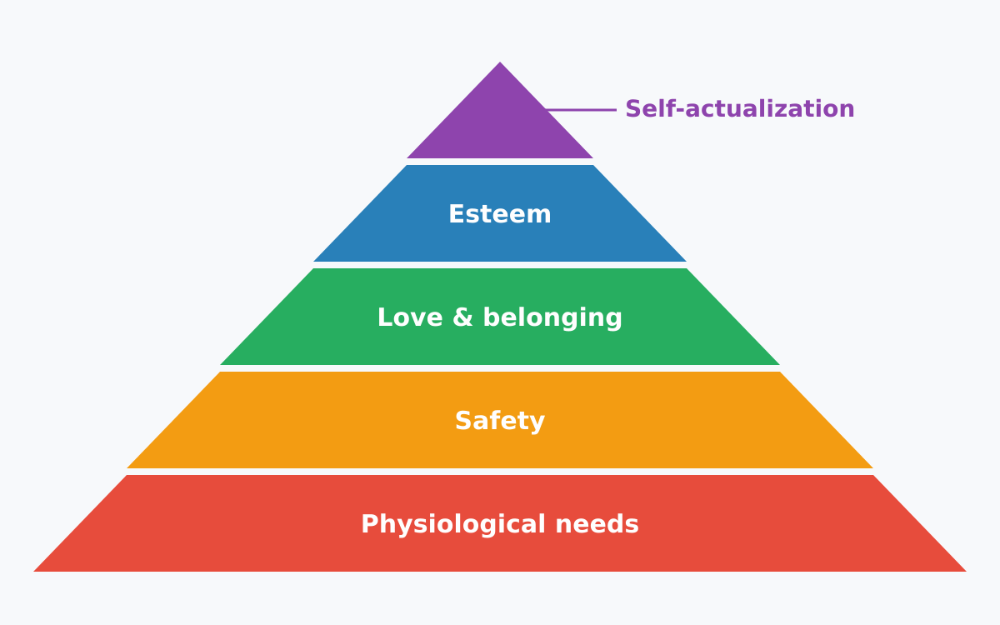

The hierarchy of needs is a psychological theory proposed by Abraham Maslow in 1943. It suggests that human needs can be arranged in a hierarchy, with basic physiological needs at the bottom and self-actualization at the top. The hierarchy is often depicted as a pyramid, with the most fundamental needs at the base and higher-level needs building upon them.
{kind=link}

Let's examine which companies operate within each level of this hierarchy.
Physiological needs
Water
- Tap Water: Most drinking water is supplied as tap water by municipal
waterworks. However, bottled water is also available at a premium.
In Germany, tap water costs approximately 0.0025€/L while bottled water
starts at 0.20€/L—about 80 times more expensive. Municipal
waterworks also manage the sewage system and wastewater treatment,
providing more comprehensive water services per unit sold than bottled water companies.
- SWM Munich: 11,604 employees, revenue of €7 billion (2024), providing water to 1.5 million people. The service area likely extends beyond Munich to include surrounding areas. They also operate public baths, public transport, electricity, and telecommunications.
- Berliner Wasserbetriebe: 4,751 employees, revenue of €1.3 billion (2023), providing 211 million m³ of water to approximately 3.5 million people (about 165 L per person per day, generating approximately 0.006€/L in revenue).
- Bottled Water: The bottled water market is dominated by a few large companies:
Food
- Primary Food Production: Similar to water, there is primary food production through agriculture, livestock, and fishing.
- Food Processing: The food processing industry is dominated by a few large companies that control a significant portion of the market. These companies often have a wide range of products and brands, making it difficult for smaller competitors to gain market share.
Energy
Energy needs should be divided into categories: electricity and fossil fuels. Due to climate change, we need to transition away from fossil fuels and electrify heating and transportation. This means moving from oil and gas to heat pumps, and from gasoline and diesel to electric vehicles. Therefore, let's focus on electricity.
- Primary Electricity Production: Operating power plants to generate electricity, including fossil fuel, nuclear, and renewable energy sources.
- Energy retailers: Companies that sell electricity to consumers:
Housing
Building houses:
- Construction companies and building contractors
Renting apartments and houses:
Communication
If you have internet access, you don't need to send SMS or make traditional phone calls, as services like WhatsApp, Signal, and Telegram cover these needs. Therefore, we can focus on internet connectivity.
Transportation
- Public Transportation:
- Ride-sharing and Taxis:
- Automotive Manufacturers:
Safety Needs
Safety needs are primarily covered by public institutions like police, military, health insurance, and unemployment insurance.
In the private sector, insurance companies provide additional coverage such as supplemental health insurance (e.g., travel insurance, dental insurance) and property insurance.
Companies in this sector include:
Time-Saving and Convenience
Household appliances that save time and effort:
- Dishwashers
- Washing machines
- Vacuum cleaners
Entertainment
- Movies and Media:
- Production:
- Streaming and Distribution:
Wellbeing and Luxury
Perfumes and Cosmetics: